Bài toán dữ liệu lớn
và mô hình thuật toán
Bài 01 · Học kỳ 1, 2026–2027
Giải thuật nền tảng của Khoa học dữ liệu
Nội dung buổi học
Bài toán dữ liệu lớn
Dữ liệu cần xử lý, kết quả cần trả và giới hạn tài nguyên.
Phân tích thuật toán
Đặc tả bài toán, tính đúng và chi phí của lời giải.
Nội dung và cách học
Các nhóm phương pháp; kiến thức, kỹ năng cần chuẩn bị.
Sau buổi học:
- Nêu được đầu vào, đầu ra và trở ngại của một bài toán.
- Giải thích được tính đúng và điều kiện chi phí của một thuật toán.
- Phân biệt kết quả tính toán với kết luận rút ra về dữ liệu.
Tính tổng kích thước trang web theo máy chủ
Kho thu thập web ghi máy chủ và kích thước của mỗi trang.
Cần cộng kích thước các trang thuộc cùng máy chủ.
| Máy chủ | Kích thước trang (byte) |
|---|
| a.vn | 40 |
| b.vn | 25 |
| a.vn | 15 |
| c.vn | 0 |
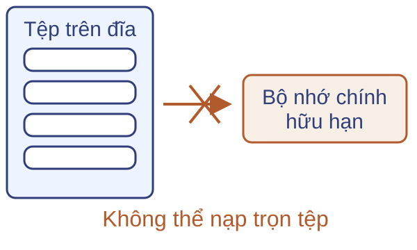
Kết quả từ bốn bản ghi: a.vn → 55 byte; b.vn → 25 byte; c.vn → 0 byte.
Đếm số lần xuất hiện của từng từ
Kho tài liệu được chia trên nhiều máy.
Với mỗi từ $w$, cần tổng số lần xuất hiện trong toàn kho.
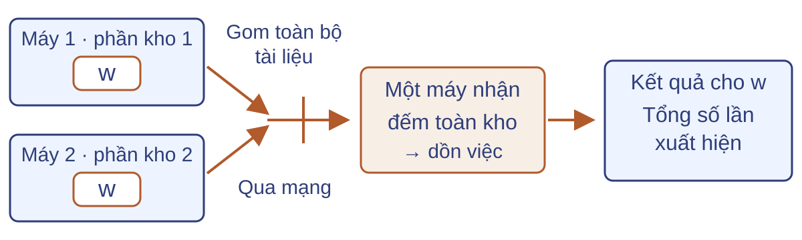
Gom cả kho về một máy tốn đường truyền và dồn việc vào máy đó. Khi chạy lại tác vụ bị lỗi, phải tránh đếm trùng.
Tính điểm quan trọng của trang web
Một truy vấn có thể khớp nhiều trang. Từ các liên kết giữa các trang,
cần tính điểm quan trọng để hỗ trợ sắp xếp kết quả tìm kiếm.
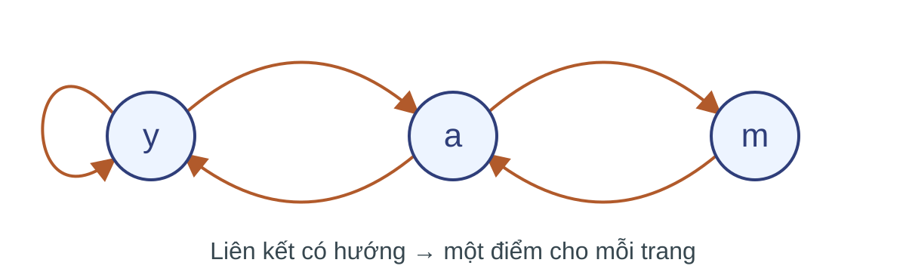
Điểm một trang phụ thuộc các trang trỏ đến nó. Trên đồ thị lớn, mỗi vòng tính phải đọc nhiều liên kết và cập nhật nhiều điểm.
Ưu tiên kết quả tìm kiếm theo chủ đề
“Jaguar” có nhiều nghĩa. Khi chủ đề đã xác định là ô tô,
cần ưu tiên các trang về xe trong kết quả tìm kiếm.
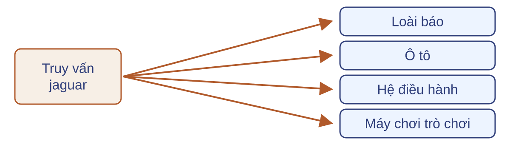
Một bộ điểm chung chưa phân biệt sở thích. Lưu điểm của toàn bộ trang web riêng cho từng người dùng lại tốn quá nhiều bộ nhớ.
Hạn chế liên kết rác trong xếp hạng
Một bên tạo nhiều trang cùng trỏ tới trang đích để đẩy điểm.
Cần giảm ảnh hưởng của các liên kết này lên kết quả xếp hạng.
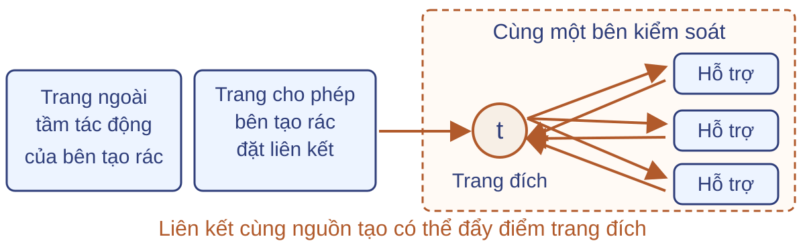
Nhiều liên kết có thể cùng do một bên tạo. Chỉ nhìn số liên kết hoặc điểm truyền tới trang đích chưa đủ đánh giá độ tin cậy.
Tìm các cặp tài liệu gần trùng
Kho web có các bản sao chỉ khác một phần văn bản.
Cần tìm những cặp có độ tương đồng đạt ngưỡng đã chọn.
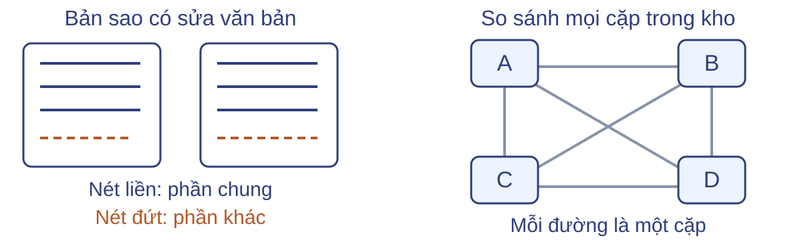
Với $N=10^6$ tài liệu, so sánh tất cả phải xét
$\binom N2=499\,999\,500\,000$ cặp, gần 500 tỷ cặp.
Tìm đoạn tài liệu bằng véc-tơ truy vấn
Mã hóa các đoạn tài liệu và truy vấn thành những dãy số (véc-tơ).
Cần trả $k$ đoạn có véc-tơ gần truy vấn nhất theo khoảng cách đã chọn.
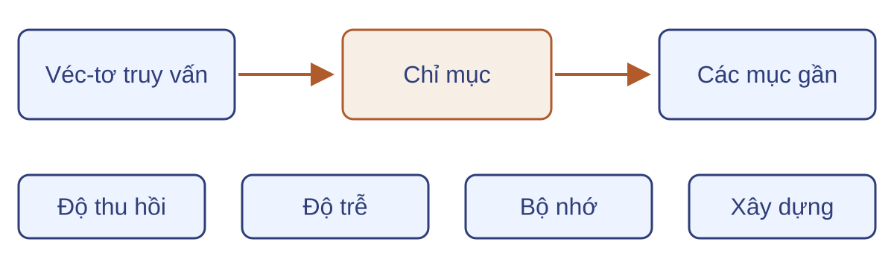
Ở quy mô 10 tỷ véc-tơ, mỗi véc-tơ 3072 chiều,
quét hết kho cho mỗi truy vấn đòi 10 tỷ phép tính khoảng cách.
Xử lý dòng dữ liệu, lưu trữ và truy vấn
Ngoài tìm kiếm và xếp hạng, hệ thống dữ liệu còn phải tiếp nhận, lưu lại và khai thác dữ liệu.
Dữ liệu đang đến
Giữ mẫu, lọc và thống kê.
Bộ nhớ hữu hạn; bản ghi tiếp tục đến.
Lưu và khôi phục
Nén văn bản và ảnh.
Giảm dung lượng nhưng giữ thông tin cần thiết.
Dữ liệu trên đĩa
Sắp xếp, tra cứu và nối bảng.
Đọc ít dữ liệu thừa; tránh đọc lại nhiều lần.
Giữ mẫu truy vấn và lọc thư đến
Phân tích truy vấn lặp cần lịch sử của một mẫu người dùng.
Tiếp nhận thư cần kiểm địa chỉ gửi có trong danh sách cho phép.
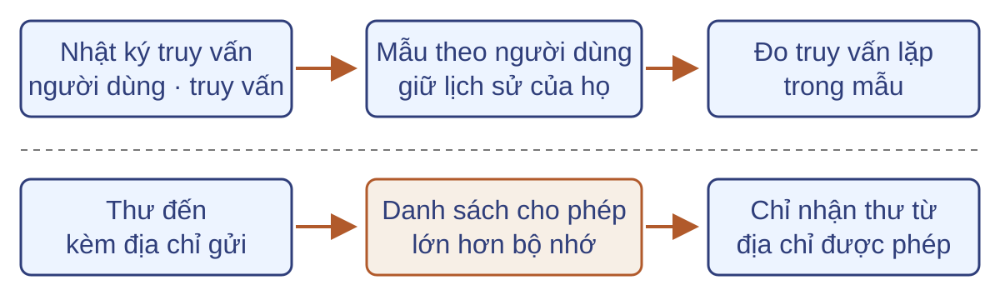
Lưu hết lịch sử tốn bộ nhớ. Tra danh sách lớn trên đĩa cho từng thư làm tăng thời gian xử lý.
Đếm người dùng và lượt truy cập gần đây
Từ nhật ký truy cập, tính số người dùng khác nhau và số lượt truy cập trong khoảng thời gian gần nhất.
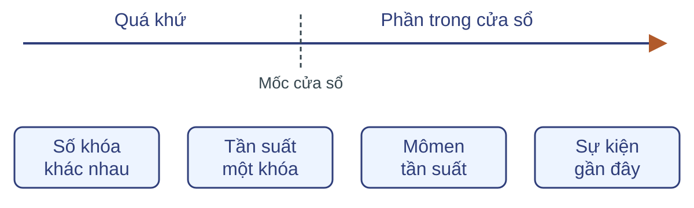
Đếm người dùng cần nhận ra lần quay lại. Thống kê gần đây phải bỏ ảnh hưởng của bản ghi hết hạn mà vẫn cập nhật kịp.
Nén dữ liệu để lưu và khôi phục
Một số đếm không tái tạo được nhật ký. Lưu dữ liệu để đọc lại cần một biểu diễn có thể giải mã.
Văn bản
Khôi phục đúng từng ký hiệu và thứ tự.
Mã nén phải chứa đủ thông tin để giải mã.
Ảnh
Có thể cho phép ảnh khôi phục khác ảnh gốc.
Mức sai khác phải đáp ứng yêu cầu chất lượng.
Lưu văn bản với ít dung lượng hơn
Nén một tệp văn bản để lưu trên đĩa; khi đọc lại, khôi phục đúng chuỗi aabaacabcabcb, không thiếu hoặc đổi ký hiệu.
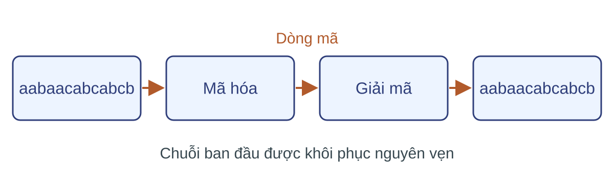
Lược bỏ tùy ý làm mất văn bản gốc. Mã và thông tin phụ trợ phải đủ để giải mã, nhưng cũng chiếm dung lượng.
Giảm dung lượng ảnh với sai số cho phép
Nén ảnh để giảm dung lượng lưu hoặc truyền; ảnh khôi phục phải đạt mức chất lượng mà ứng dụng yêu cầu.
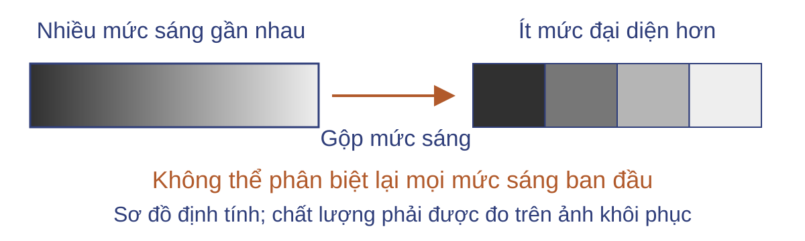
Gộp các giá trị điểm ảnh làm mất chi tiết. Cần kiểm cả dung lượng mã và sai khác của ảnh khôi phục.
Xử lý và truy vấn dữ liệu trên đĩa
Tệp trên đĩa được đọc vào bộ nhớ theo từng khối.
Khi tệp lớn hơn bộ nhớ, chỉ một phần dữ liệu được xử lý cùng lúc.
Sắp xếp
Đưa toàn bộ bản ghi về thứ tự khóa.
Tra cứu
Lấy bản ghi thỏa điều kiện, tránh quét hết tệp.
Nối bảng
Ghép dữ liệu liên quan từ hai tệp.
Mỗi lần đọc hoặc ghi khối đều có chi phí. Nén dữ liệu chưa giải quyết cách truy cập các khối cần dùng.
Sắp xếp tệp lớn theo khóa
Đầu vào là tệp bản ghi chưa có thứ tự. Đầu ra là tệp chứa đủ các bản ghi ấy, sắp theo khóa tăng dần, kể cả các khóa lặp.
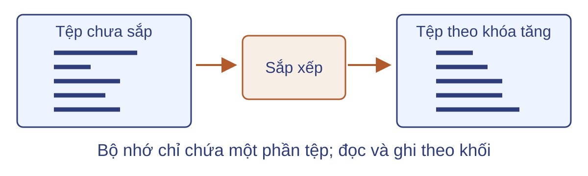
Không thể nạp trọn tệp để sắp như một mảng trong bộ nhớ. Đọc và ghi lại nhiều lần làm tăng chi phí dù số so sánh ít.
Tìm hồ sơ giảng viên theo mã hoặc lương
Từ bảng hồ sơ giảng viên, trả hồ sơ có mã đã cho, hoặc tất cả hồ sơ có mức lương nằm trong khoảng yêu cầu.
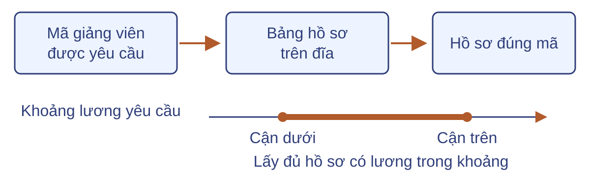
Quét cả bảng cho mỗi yêu cầu đọc nhiều dữ liệu thừa. Nếu dùng chỉ mục, phải cập nhật nó khi mã hoặc lương thay đổi.
Tìm tài liệu chứa đồng thời hai từ khóa
Cho một kho tài liệu và hai từ khóa. Trả tất cả tài liệu chứa cả hai từ, không chỉ những tài liệu chứa một từ.
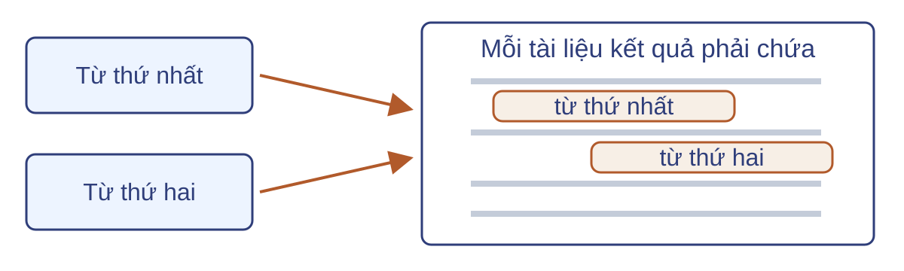
Đọc từng tài liệu cho mỗi truy vấn lặp lại công việc trên cả kho. Cần tìm được nơi xuất hiện của từng từ mà không quét lại hết.
Tìm đối tượng giao vùng trên bản đồ
Cho các đối tượng hình học và vùng bản đồ được chọn. Trả các đối tượng nằm một phần hoặc toàn bộ trong vùng đó.
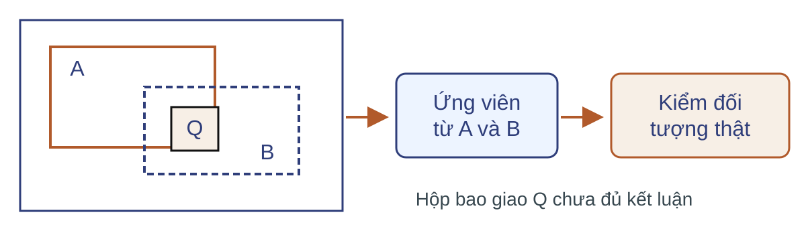
Kiểm mọi hình trên bản đồ tốn công. Lọc theo hộp bao giảm ứng viên, nhưng hộp bao giao vùng chưa đủ kết luận về hình thật.
Ghép sinh viên với các môn đã đăng ký
Ghép hồ sơ sinh viên với các lượt đăng ký học có cùng mã sinh viên để trả thông tin sinh viên kèm từng môn đã đăng ký.
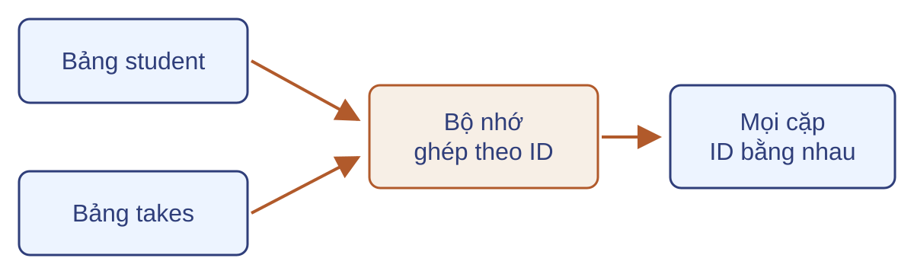
Hai bảng chiếm 100 và 400 khối; bộ nhớ chỉ có 20 khối. Quét bảng đăng ký lại cho từng sinh viên sẽ đọc cùng dữ liệu nhiều lần.
Phân tích thuật toán xử lý dữ liệu lớn
Các bài toán vừa gặp khác nhau về đầu ra và giới hạn tài nguyên.
Phân tích một lời giải gồm hai việc:
Đặc tả
Xác định miền đầu vào, kết quả cần trả và mức chính xác yêu cầu.
Đánh giá
Kiểm tra tính đúng, chi phí tài nguyên và chất lượng kết quả.
Bài toán phân tích: tìm các cặp tài liệu gần trùng trong kho web.
Bài toán tìm cặp tài liệu gần trùng
Bản sao web có thể đổi tên máy chủ hoặc liên kết nhưng giữ nội dung chính.
Kiểm bằng nhau từng ký tự không nhận ra những cặp gần trùng này.
Đầu ra: các cặp chia sẻ đủ nhiều đoạn văn bản.
Độ đo và ngưỡng xác định thế nào là “đủ nhiều”.
Độ tương đồng của hai tài liệu
Biểu diễn mỗi tài liệu bằng tập các đoạn ký tự liên tiếp cùng độ dài.
Hai tập $S,T$ dưới đây có 3 phần tử chung, 8 phần tử trong hợp.
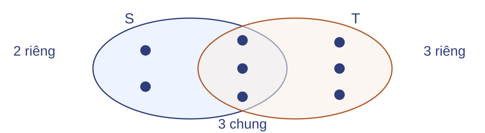
$J(S,T)=\dfrac{|S\cap T|}{|S\cup T|}=\dfrac38$
Với ngưỡng $\tau$, cặp này được chọn khi và chỉ khi $\tau\le 3/8$.
Đặc tả tìm cặp gần trùng
Đầu vào
$N$ tập hữu hạn, không rỗng $C_1,\ldots,C_N$; ngưỡng $\tau\in[0,1]$.
Điều kiện đầu ra
Trả đủ mọi cặp đạt ngưỡng, không trả cặp sai; mỗi cặp đúng một lần.
$R=\{(i,j):1\le i<j\le N,\ J(C_i,C_j)\ge\tau\}$
$i<j$ loại cặp tự so sánh và cặp đảo thứ tự.
Khi $N<2$, kết quả rỗng.
Thuật toán xét mọi cặp
nếu N < 2: kết thúc với kết quả rỗng
cho i = 1,...,N−1:
cho j = i+1,...,N:
tính chính xác J(Cᵢ, Cⱼ)
nếu J(Cᵢ, Cⱼ) ≥ τ:
xuất cặp (i, j)
Với $N=2$, $C_1=S$, $C_2=T$: chỉ xét $(1,2)$.
Xuất $(1,2)$ nếu $\tau\le3/8$; ngược lại trả rỗng.
Câu hỏi: Nếu bắt đầu vòng trong từ $j=1$, đầu ra có còn đúng đặc tả?
Các tiêu chí đánh giá
Cùng một đặc tả, các lời giải có thể khác nhau trên nhiều mặt.
Kết quả
Tính đúng
Chất lượng gần đúng
Tài nguyên
Khối lượng tính toán
Bộ nhớ làm việc
Đọc ghi và lượt quét
Dữ liệu truyền qua mạng
Dung lượng lưu trữ
Vận hành
Độ trễ truy vấn
Chi phí xây dựng
Chi phí cập nhật
Chỉ so sánh khi đã nêu mô hình chi phí và yêu cầu đầu ra.
Tính đúng của thuật toán
Tính đúng yêu cầu cả hai điều: không trả cặp sai và không bỏ cặp đúng.
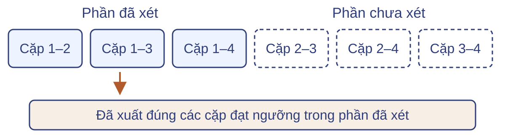
Bất biến: sau mỗi bước, kết quả đã xuất gồm đúng các cặp đạt ngưỡng trong phần đã xét.
Xét hết các cặp hợp lệ thì kết quả bằng $R$.
Khối lượng tính toán
Số phép toán phụ thuộc cả số cặp lẫn chi phí kiểm một cặp.
Số lần kiểm
$N(N-1)/2$. Với $N=10^6$:
$499\,999\,500\,000$ cặp.
Chi phí mỗi lần
Mỗi tập có tối đa $L$ phần tử đã sắp: $O(L)$ cho một cặp, $O(N^2L)$ cho toàn kho.
Bộ nhớ làm việc
Bộ nhớ làm việc là dung lượng cần giữ đồng thời khi thuật toán chạy.
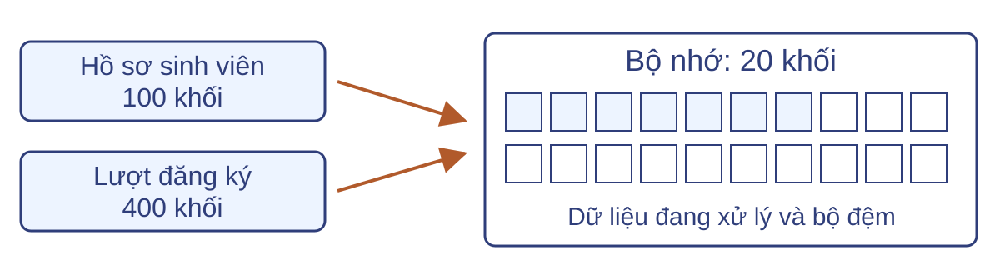
Nối hai bảng không thể giữ trọn một bảng trong 20 khối.
Cần xử lý từng phần và dành chỗ cho các bộ đệm.
Đọc ghi và số lượt quét
Chi phí đọc ghi đếm các khối chuyển giữa đĩa và bộ nhớ.
Một lượt quét đọc hết tệp; các lượt đọc lại vẫn được tính.
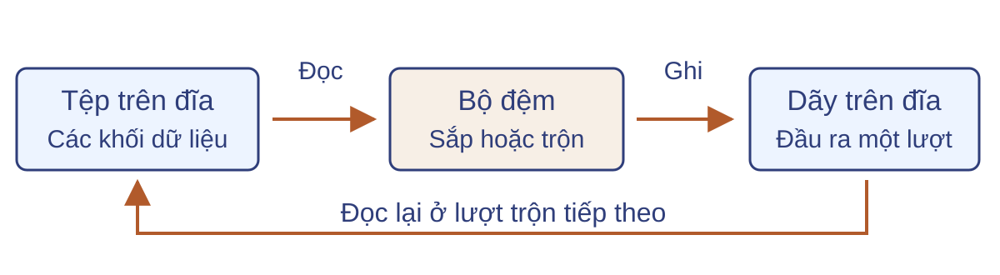
Sắp một tệp lớn có thể cần nhiều lượt trộn.
Ít phép so sánh chưa bảo đảm ít khối đọc ghi.
Dữ liệu truyền qua mạng
Chi phí mạng là lượng dữ liệu trao đổi giữa các máy để hoàn thành tác vụ.
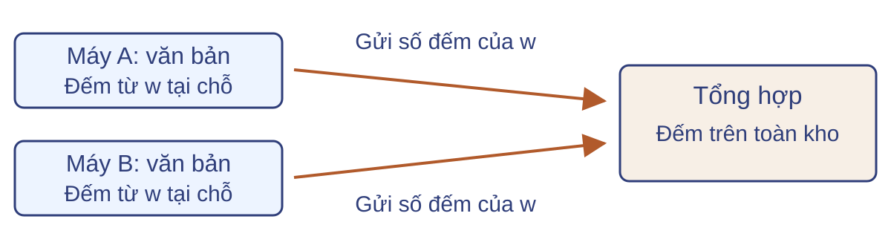
Đếm từ tại nơi lưu rồi gửi số đếm có thể giảm dữ liệu truyền.
Vẫn phải gom đủ đóng góp và tránh tính trùng khi chạy lại.
Độ trễ truy vấn
Độ trễ là thời gian từ khi nhận truy vấn đến khi trả kết quả.
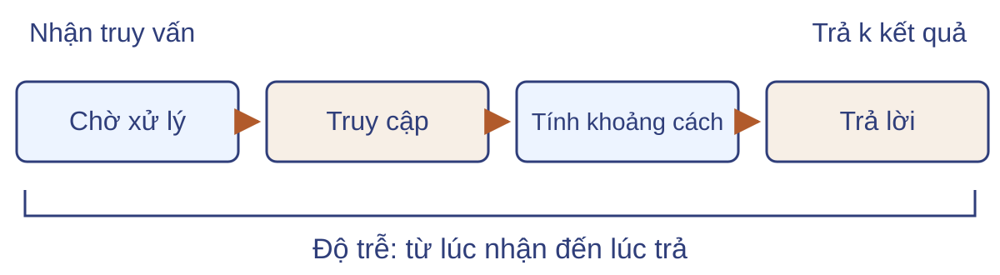
Tìm $k$ đoạn tài liệu gần véc-tơ truy vấn cần trả lời từng yêu cầu.
Phải đo độ trễ cùng chất lượng kết quả và tải truy vấn.
Chi phí xây dựng chỉ mục
Xây dựng chỉ mục tổ chức dữ liệu để phục vụ những truy vấn về sau.
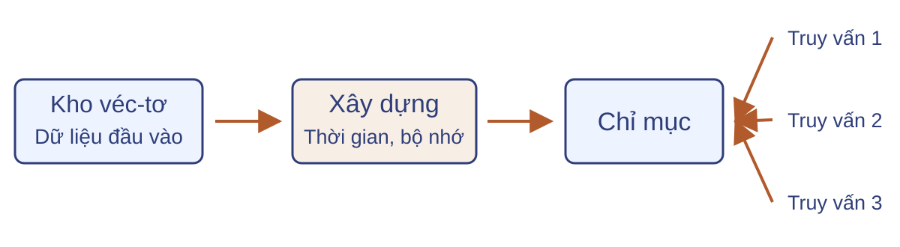
Với tìm kiếm véc-tơ, cần tính thời gian xây và bộ nhớ lớn nhất khi xây.
Độ trễ truy vấn thấp không làm chi phí chuẩn bị biến mất.
Chi phí cập nhật dữ liệu
Chi phí cập nhật gồm công việc sửa dữ liệu và các cấu trúc phụ thuộc.
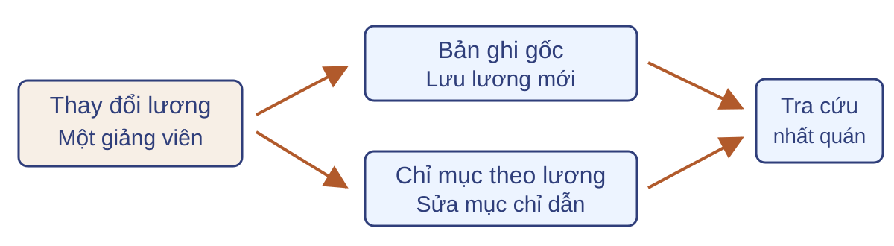
Tra giảng viên theo khoảng lương cần chỉ mục theo kịp bảng gốc.
Chỉ sửa bản ghi có thể khiến truy vấn bỏ sót hoặc trả mục đã cũ.
Dung lượng lưu trữ
Dung lượng lưu trữ là chỗ chiếm bởi dữ liệu đã lưu và thông tin phụ trợ.
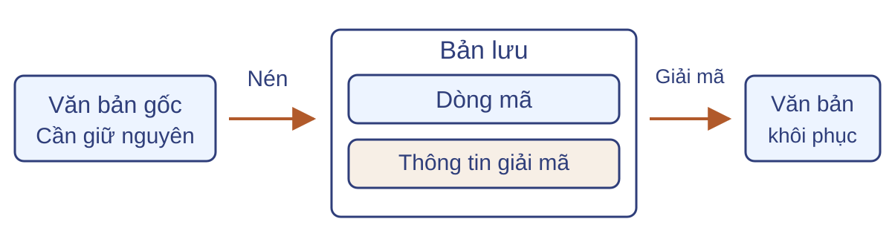
Nén văn bản phải tính cả mã và thông tin giải mã cần lưu.
Bản khôi phục phải bằng nguyên văn bản gốc.
Chất lượng kết quả gần đúng
Với tìm $k$ hàng xóm gần nhất, độ thu hồi tại $k$ đo tỷ lệ hàng xóm thật được trả lại.
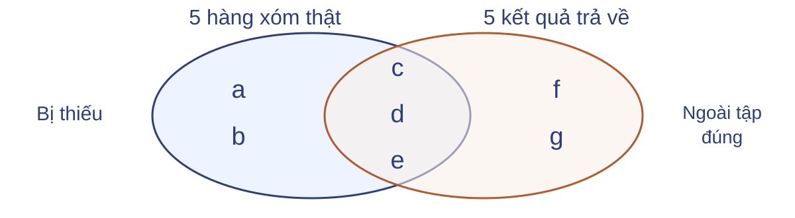
$\operatorname{recall@}k=\dfrac{\text{số hàng xóm thật được trả lại}}{k};\quad \operatorname{recall@}5=\dfrac35$
Hai kết quả $f,g$ không bù được hai hàng xóm thật $a,b$ bị thiếu.
Giảm ứng viên và nguy cơ bỏ sót
Trong kho tài liệu, cặp ứng viên là cặp được chọn để kiểm Jaccard chính xác.
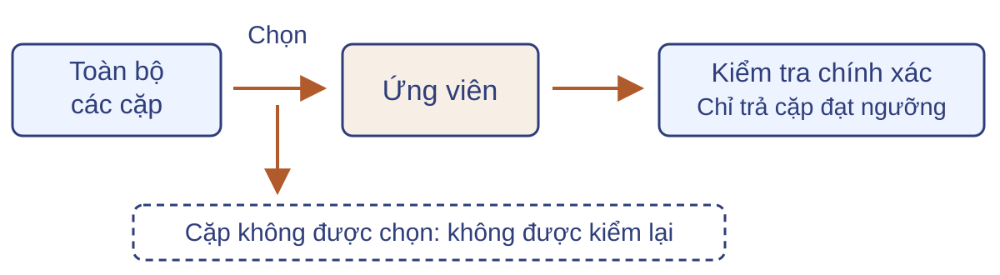
Câu hỏi: Kiểm tra chính xác từng ứng viên đã đủ bảo đảm trả mọi cặp đạt ngưỡng chưa?
Từ yêu cầu đến nhóm phương pháp
| Yêu cầu đã gặp | Hướng xử lý cần học |
|---|
| Tổng hợp kho ở nhiều máy | Chia việc và gom đóng góp theo khóa |
| Tránh đối chiếu mọi cặp tài liệu | Biểu diễn gọn và chọn ứng viên |
| Tra cứu tệp vượt bộ nhớ | Tổ chức chỉ mục và truy cập khối |
Học phần phân tích cơ chế, điều kiện đúng và chi phí của các hướng xử lý này.
Học phần và năng lực cần đạt
Giải thuật nền tảng của Khoa học dữ liệu
UET.DSE2053 · 3 tín chỉ · Học kỳ 1, 2026–2027
Giải thích và lựa chọn
Nêu cơ chế, giả thiết; chọn phương pháp theo bài toán.
Thiết kế và triển khai
Xây lời giải; kiểm tính đúng, hiệu suất và sai số.
Tự học, hợp tác và xử lý dữ liệu có trách nhiệm.
Năm mạch của học phần
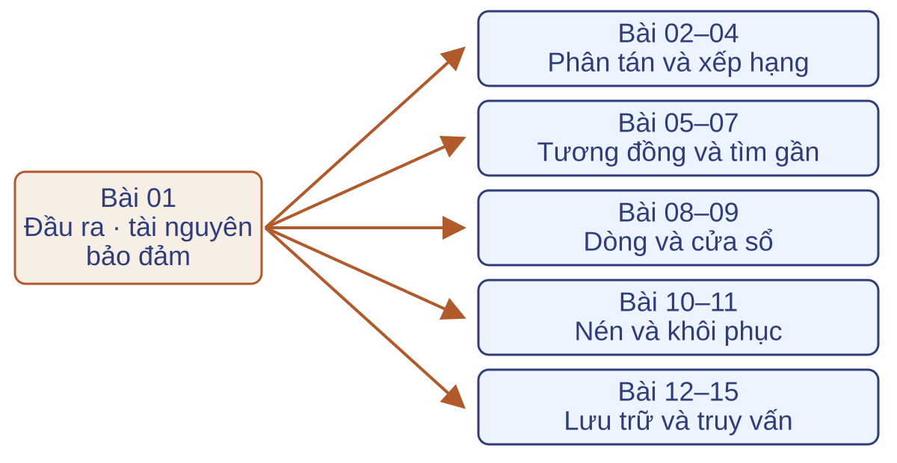
Năm nhóm liền nhau trong thứ tự học; tiên quyết đi theo từng nhánh.
Xử lý phân tán và xếp hạng
Bài 02 · MapReduce
Tổng hợp theo khóa; xét dữ liệu trung gian và khôi phục tác vụ.
Bài 03 · PageRank
Tính điểm trên đồ thị; xét điều kiện hội tụ và chi phí mỗi vòng.
Bài 04 · Các biến thể
Theo chủ đề, TrustRank, HITS; xét giả thiết của tín hiệu liên kết.
Tương đồng và hàng xóm gần
Bài 05 · MinHash
Tập đoạn ký tự và Jaccard → chữ ký gọn.
Bài 06 · LSH
Chữ ký → cặp ứng viên → đối chiếu.
Bài 07 · HNSW và PQ
Véc-tơ → chỉ mục → truy hồi gần.
Đánh giá xác suất ứng viên, độ thu hồi, độ trễ và bộ nhớ.
Dòng dữ liệu và cửa sổ
Bài 08 · Lấy mẫu, Bloom
Giữ mẫu đúng đơn vị; lọc trước tra cứu đắt.
Bài 09 · Thống kê gọn
Flajolet–Martin, Count-Min, AMS, DGIM.
Chốt đại lượng truy vấn, phạm vi thời gian và loại sai số.
Nén dữ liệu và từ điển
Bài 10 · Mã hóa
Huffman tĩnh/thích nghi; mã hóa số học.
Bài 11 · Lặp và ảnh
LZ77, LZ78, LZW; JPEG.
Văn bản: khôi phục đúng. Ảnh có lượng tử hóa: xét sai số tái tạo.
Lưu trữ, chỉ mục và kết nối
| Bài | Phương pháp đại diện | Thuộc tính cần xét |
|---|
| 12 | Sắp xếp trộn ngoài bộ nhớ | Lượt đọc/ghi, bộ đệm |
| 13 | B+-Tree, băm, bitmap | Loại truy vấn, cập nhật |
| 14 | Chỉ mục đảo, R-tree | Lọc đủ, tinh lọc đúng |
| 15 | Nối trộn, nối băm | Bộ nhớ, lệch phân hoạch |
Kiểm chứng kết luận từ dữ liệu
Tính đúng
Thuật toán trả đúng đầu ra đã đặc tả.
Giá trị suy luận
Kết luận phụ thuộc giả thiết về cách dữ liệu phát sinh.
Liệt kê đúng các hồ sơ trùng chưa đủ để kết luận có hoạt động phối hợp.
Mô hình ngẫu nhiên cho hồ sơ lưu trú
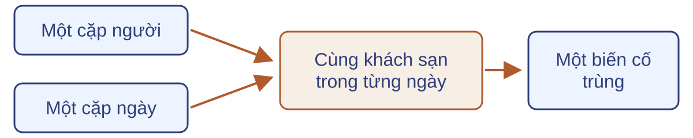
$P=10^9$ người; $T=1000$ ngày; $H=10^5$ khách sạn.
Mỗi người lưu trú với xác suất $q=0{,}01$ mỗi ngày.
Các lựa chọn độc lập giữa mọi người và mọi ngày; nếu đi, chọn đều một khách sạn.
Kỳ vọng số biến cố trùng
$X$: số biến cố cặp người–cặp ngày trùng khách sạn.
$$\mathbb E[X]=\binom P2\binom T2\left(\frac{q^2}{H}\right)^2$$
Khoảng $249\,750$ biến cố dưới mô hình ngẫu nhiên.
MMDS dùng xấp xỉ $\binom n2\approx n^2/2$ và được $250\,000$.
Khung phân tích một lời giải
- Chốt dữ liệu, đầu ra và giả thiết.
- Xác định giới hạn tính, nhớ, đọc/ghi, mạng và độ trễ.
- Nêu tính đúng, sai số và điều kiện khả thi.
- Kiểm tra kết luận có vượt khỏi mô hình hay không.
Câu hỏi: Bộ lọc có thể bỏ sót cặp gần trùng. Nó có đáp ứng yêu cầu trả đủ kết quả không?
Chuẩn bị cho bài MapReduce
Tổng hợp trên nhiều máy cũng phải gom đủ đóng góp và không tính trùng.
- Đọc MMDS Chương 2 theo tài liệu Bài 02.
- Ôn ánh xạ khóa–giá trị và phép nhóm.
- Ôn tính kết hợp, giao hoán của phép cộng và bất biến.
Câu hỏi: Gộp các tổng một phần theo thứ tự khác nhau cần những giả thiết nào để giữ đúng tổng?
Bài tập củng cố
MMDS · Mục 1.2.4 · Bài 1.2.1 và 1.2.2
Dùng lại phép đếm và kỳ vọng từ hồ sơ lưu trú: thay quy mô, đổi tiêu chuẩn trùng, rồi xét giỏ hàng.
Biên soạn theo sách và slide tại MMDS.
Sản phẩm: phép đếm, xác suất, kỳ vọng và giới hạn kết luận.
Ba biến thể của hồ sơ lưu trú
Mô hình gốc: $P=10^9$, $T=1000$, $H=10^5$, $q=0{,}01$.
Câu hỏi: số cặp bị báo nghi vấn thay đổi thế nào khi:
- Quan sát $2000$ ngày.
- Quan sát $2$ tỷ người và có $200\,000$ khách sạn.
- Chỉ báo khi cùng khách sạn trong ba ngày khác nhau.
Áp dụng từng thay đổi riêng; các số khác giữ nguyên.
Thay đổi số ngày và số người
Câu hỏi: giải hai phần (a), (b) của Bài 1.2.1.
- (a) $T=2000$; giữ quy mô người và khách sạn gốc.
- (b) $P=2\times10^9$, $H=2\times10^5$; giữ $T=1000$.
Sản phẩm: số phép thử, xác suất một phép thử, kỳ vọng và tỷ lệ so với cơ sở.
Gợi ý: tách ảnh hưởng của số phép thử khỏi xác suất trùng.
Yêu cầu trùng trong ba ngày
Câu hỏi: giải phần (c) của Bài 1.2.1 với quy mô gốc.
Chỉ báo một cặp nếu cùng khách sạn trong ba ngày khác nhau.
Sản phẩm: sửa đơn vị đếm, tính kỳ vọng và giải thích ý nghĩa.
Gợi ý: chọn bộ ba ngày; khách sạn có thể khác giữa các ngày.
Trùng tập mặt hàng
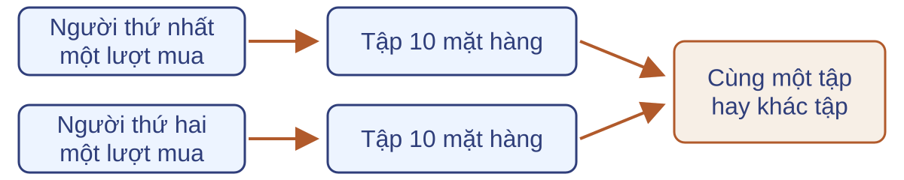
$100$ triệu người; $100$ lượt/người/năm; mỗi lượt mua $10$ trong $1000$ mặt hàng.
Giả thuyết nguồn: một cặp khủng bố sẽ mua cùng tập 10 mặt hàng trong năm.
Câu hỏi: cặp mua cùng tập có thể được kỳ vọng là cặp cần tìm?
Giải thích kết quả và giới hạn
Câu hỏi: hoàn tất Bài 1.2.2 bằng một lời giải có bốn phần.
- Đếm các cặp lượt mua của hai người khác nhau.
- Tính xác suất hai tập mặt hàng trùng nhau.
- Tính kỳ vọng số trùng dưới mô hình nền.
- Trả lời theo giả thuyết nguồn và nêu giới hạn suy luận.